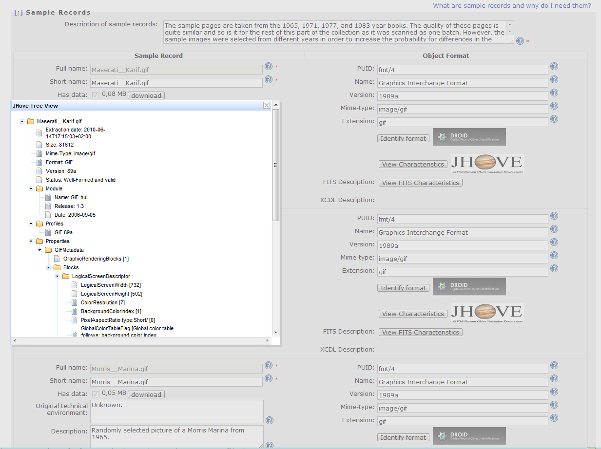
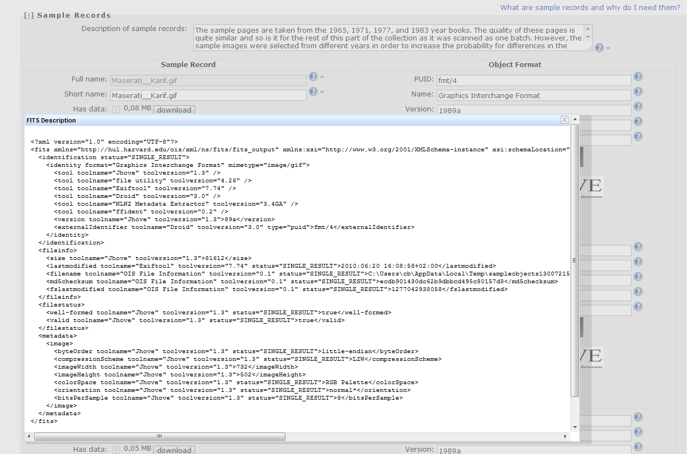

This page explains the definition of sample objects in the planning workflow.
The second step describes the set of objects that forms the scope of the current plan, and selects a subset of representative objects for experimentation.
A general description of the characteristics of the set of objects, called collection, includes basic properties such as the size of the collection, the class of objects and the object formats they are currently represented in.
As a complete evaluation of the quality of preservation action tools is infeasible on the potentially very large collection of objects, you have to select representative sample objects that should cover the range of essential characteristics present in the collection at hand. From a collection of text documents this can be for instance three sample objects: One very large document containing many pictures, one document that contains several equations which are linked from the table of figures, and one exceptionally small documents that just contains plain text.
The selection of sample objects is an essential task within the preservation planning workflow. Potential preservation actions which are defined in the next workflow step will be carried out on these sample objects in the context of well-defined experiments. Significant results from these experiments are only obtained if the sample object have been carefully chosen.
To reduce effort to a minimum, this subset should be as small as possible. However, the sample objects are used as a representative set for testing the effects of applying preservation actions to the whole set of objects. A complete and thorough evaluation of the quality of preservation actions relies heavily on the completeness of features present within the test set. Thus it needs to be as large as needed to cover the variety of essential characteristics on both a technical and an intellectual level.
Depending on the degree of variance within the collection, typically between 3 and 10 sample objects are selected. For these samples, an in-depth characterisation should be performed, describing the significant properties and their technical characteristics such as their name and provenance, the file format, and specific risk factors. Identification of the selected objects can be done using DROID which has been integrated into Plato.
Sample objects chosen from the collection can be easily uploaded into Plato. At the very bottom of the page use the 'Browse...' button to choose a file from your local file system. Afterwards press 'Upload File' which incorporates the file as sample object into the preservation plan. The screenshot further down shows two files that have been uploaded 'Polar bear 1' and 'Polar bear 2'.
In case your samples are objects that can't be uploaded, such as specific database records, you might choose 'Add record' from the bottom of the web page. This enables you to describe the sample object without uploading a file.
For the samples, an in-depth characterisation is performed, describing the significant properties and their technical characteristics such as their name and provenance, the file format, and specific risk factors. The uploaded sample record can be identified by clicking 'Identify format' on the page. For identification Plato uses the software tool DROID which it calls and displays the output: PUID (Pronom Unique Identifier), Name, Version and MIME-type.
Plato also provides the function to characterise uploaded files in-depth (for some formats). When you press the button 'Describe sample records in XCDL`, Plato will use characterisation services that extract properties of the objects using the XCL engine and thus producing an XCDL for each objects. This can be used to compare original and transformed objects during experiment evaluation.
All information about sample objects, including the characterisation in XCDL, is stored in the preservation plan.
Further information on this subject can be found in the publications on the documentation page.
Another integrated well-known characterisation tool is JHove. The screenshot below shows the tree view you get when you click the "View characteristics" button in Plato. 
And finally, we have integrated FITS, the File Information Toolset.
It includes tools such as Jhove, DROID, the ExifTool and others, and normalises the output in XML as shown in the screenshot below:
